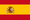
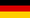
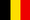

| Octavos | Cuartos | Semifinales | Partido Final | |||||||
| {{partidosOctavos[0].partido.equipo1}} | 2 | |||||||||
| {{partidosOctavos[0].partido.equipo2}} | 0 | |||||||||
| {{partidosCuartos[1].partido.equipo1}} | 1 | |||||||||
| {{partidosCuartos[1].partido.equipo2}} | 0 | |||||||||
| {{partidosOctavos[2].partido.equipo1}} | 0(5) | |||||||||
| {{partidosOctavos[2].partido.equipo2}} | 0(4) | |||||||||
| {{partidosSemi[0].partido.equipo1}} | 1(3) | |||||||||
| {{partidosSemi[0].partido.equipo2}} | 1(4) | |||||||||
| {{partidosOctavos[4].partido.equipo1}} | 0 | |||||||||
| {{partidosOctavos[4].partido.equipo2}} | 1 | |||||||||
| {{partidosCuartos[0].partido.equipo1}} | 0(3) | |||||||||
| {{partidosCuartos[0].partido.equipo2}} | 0(2) | |||||||||
|  {{partidosOctavos[6].partido.equipo1}} | 1 | Final | ||||||||
| {{partidosOctavos[6].partido.equipo2}} | 2 | {{partidosFinal[0].partido.equipo1}} | 0 | |||||||
|  {{partidosFinal[0].partido.equipo2}} | 1 | |||||||||
| Tercer Puesto | ||||||||||
| {{partidosOctavos[4].partido.equipo1}} | 2 | Italia | 2 | |||||||
| {{partidosOctavos[4].partido.equipo2}} | 1 | Inglaterra | 1 | |||||||
| {{partidosCuartos[2].partido.equipo1}} | 2 | |||||||||
| {{partidosCuartos[2].partido.equipo2}} | 3 | |||||||||
| {{partidosOctavos[7].partido.equipo1}} | 1 | |||||||||
|  {{partidosOctavos[7].partido.equipo2}} | 0 | |||||||||
| {{partidosSemi[1].partido.equipo1}} | 1(3) | |||||||||
| {{partidosSemi[1].partido.equipo2}} | 1(4) | |||||||||
| {{partidosOctavos[1].partido.equipo1}} | 2 | |||||||||
| {{partidosOctavos[1].partido.equipo2}} | 1 | |||||||||
| {{partidosCuartos[3].partido.equipo1}} | 1 | |||||||||
| {{partidosCuartos[3].partido.equipo2}} | 0 | |||||||||
| {{partidosOctavos[3].partido.equipo1}} | 4 | |||||||||
| {{partidosOctavos[3].partido.equipo2}} | 1 | |||||||||